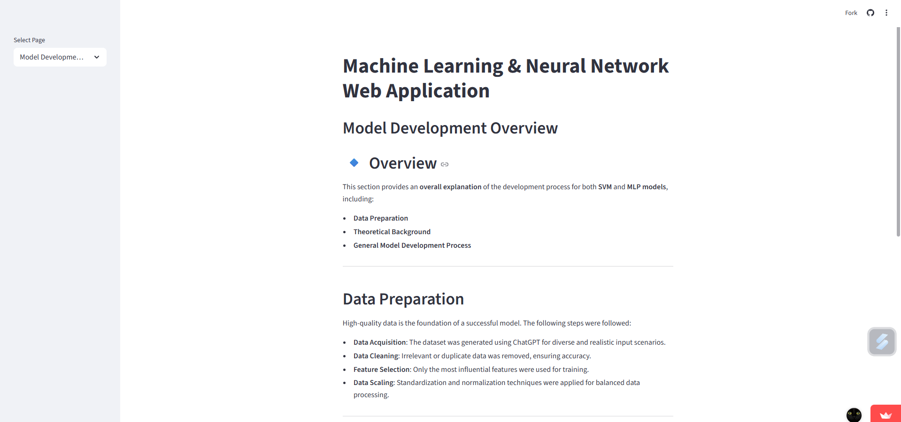
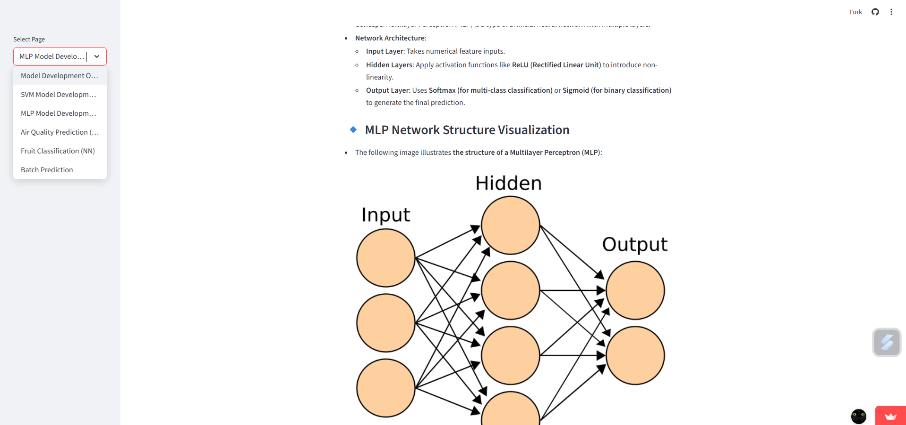
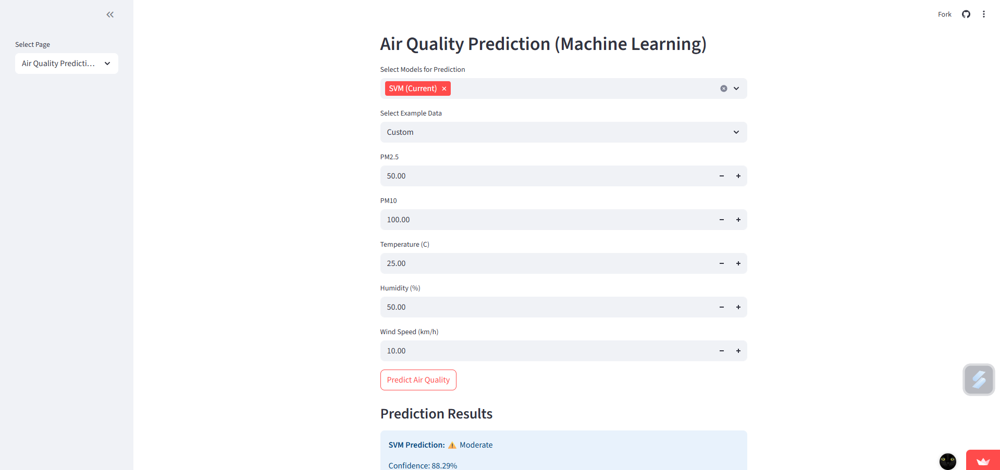
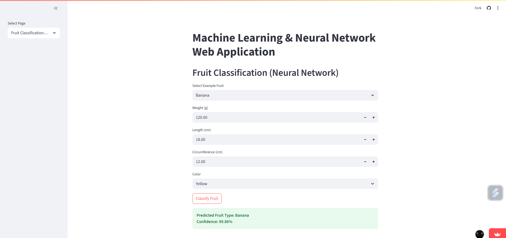
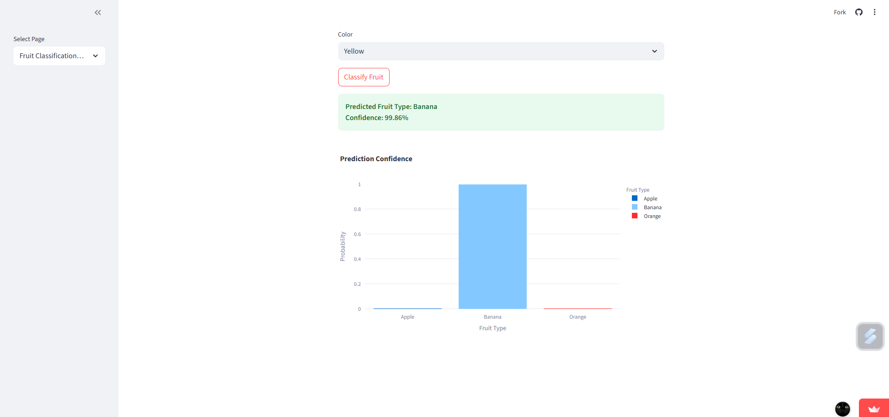
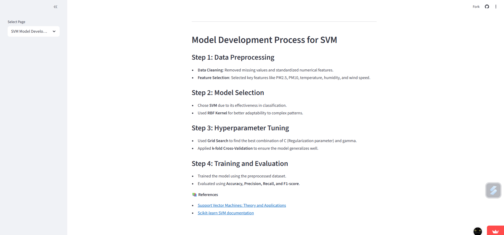

Machine Learning & Neural Network Web Application
ระบบนี้พัฒนาโมเดล Machine Learning และ Neural Network เพื่อจำแนกคุณภาพอากาศและผลไม้จากข้อมูล ใช้ Google Colab สำหรับเทรนโมเดล และ Streamlit สร้าง Web App ให้ผู้ใช้ทำนายผลได้ ผู้ใช้สามารถอัปโหลดข้อมูล แล้วระบบจะแสดงผลลัพธ์การทำนายพร้อมกราฟวิเคราะห์
View ➜
3 Technologies
5 Features






Key Features
- ทำนายคุณภาพอากาศ ด้วย SVM & Random Forest
- จำแนกผลไม้ ด้วย Neural Network (MLP)
- โหลดโมเดลจาก .pkl โดยไม่ต้องเทรนใหม่
- แสดงผลลัพธ์/กราฟ แบบโต้ตอบผ่านเว็บ
- รองรับการอัปโหลด CSV เพื่อใช้งานโมเดล
Technologies Used
Google Colab
Python
Streamlit